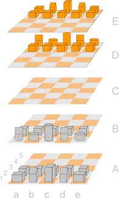
Das Spielfeld bei Raumschach besteht aus einem 5x5x5-Brett, d.h. 125 Feldern (im Gegensatz zu einem 8x8-Brett beim traditionellen Schach). Dabei werden die einzelnen Ebenen mit Großbuchstaben von A-E, die Spalten mit Kleinbuchstaben von a-e und die Zeilen mit Zahlen von 1-5 bezeichnet. Die letzten beiden Bezeichnungen sind analog zum traditionellen Schach.
Dabei stehen sich die beiden Farben Grau und Orange ähnlich wie beim traditionellen Schach gegenüber: Grau steht auf Ebene A-B, a-e, 1-2 und Orange steht auf Ebene D-E, a-e, 4-5.
Das mittlere Feld des Raumschachspielfeldes wird durch die Koordinaten C,c,3 gekennzeichnet.
Beim Raumschach gibt es die traditionellen Schachfiguren:
| Bauern |
| Läufer | |
| Springer | |
| Turm | |
| Dame | |
| König |
und eine weitere Figur:
| Einhorn |
Im wesentlichen bewegen sich die Figuren beim Raumscahch wie beim traditionellen Schach, allerdings kommt jeweils eine neue Dimension hinzu. Als Eselsbrücke: Alle Figuren bewegen sich in ihrer aktuellen Ebene wie beim traditionellen Schach. Zusätzlich ergeben sich aber neue Züge indem man sich die jeweilige Ebene an der Spalte oder Zeile, auf welcher die Figur steht, gedreht vorstellt.
Es dürfen nie mehr als eine Figur pro Feld vorhanden sein.
Alle Figuren mit Ausnahme der Bauern können sich in den Ebenen nach oben und unten bewegen.
| 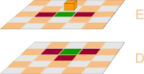 | Bauern bewegen sich beim Raumschach um jeweils ein Feld nach vorne oder oben/unten. Sie schlagen Figuren auf Feldern, deren Kanten an die Kanten des Bauernfeldes angrenzen. Dabei können sich die grauen Bauern von Ebene A -> B, B -> C, ... oder in ihrer jeweiligen Ebene bewegen, orangene Bauern hingegen von Ebene E -> D, D -> C, ... oder in ihrer jeweiligen Ebene. Links ist ein Beispiel für die Bewegungen eines orangenen und rechts eines grauen Bauerns dargestellt: Grün sind mögliche normale Züge und rot sind Felder, welche geschlagen werden dürfen. | 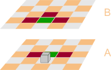 |
| 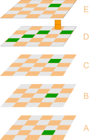 | Läufer bewegen sich in der jeweiligen Ebene wie normale Läufer im traditionalen Schachspiel: Entlang der Diagonalen. Dabei bewegen sich Läufer immer auf Feldern der selben Farbe: Startet ein Läufer auf Weiß, wird er das ganze Spiel über nur weiße Felder betreten. Dies führt aber dazu, dass sich Läufer im Raumschach zwischen den Ebenen parallel zu den Kanten des Spielfelds und nicht über die Raumdiagonalen bewegen (das würde einen Farbwechsel verlangen). Links und rechts dargestellt mögliche Züge zweier Läufer. Die Bewegungs- und Schlagzüge sind bei Läufern identisch. |  |
 | Springer sind im Raumschach noch gefährlichere Figuren als im traditionellen Schach. Sie können, wie der Name schon sagt, über andere Figuren springen und decken im Idealfall statt 8 Feldern im traditionellen 24 Felder ab (fast 20% des Spielfeldes). Springer bewegen sich nach dem Muster 2+1: Zwei Felder in eine Richtung (rechts, links, oben, unten, vor, zurück) und anschließend 1 Feld in eine andere Richtung (rechts, links, oben, unten, vor, zurück). Beispielsweise also eine Ebene hoch, zwei Felder vor. Links und rechts dargestellt mögliche Züge zweier Springer. Die Bewegungs- und Schlagzüge sind bei Springern identisch. | 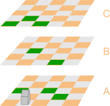 |
| 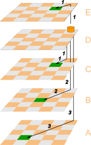 | Die Züge der Läufer sind dadurch definiert, dass jedes mögliche Feld, auf das ein Läufer gesetzt werden kann, die selbe Farbe wie das Startfeld hat. Dies führt dazu, dass Läufer nicht über die Raumdiagonalen ziehen können. Um dieses Bewegungsmuster abzudecken existiert das Einhorn. Es kann sich in seiner aktuellen Ebene nicht bewegen, dafür aber für jede Ebene, welche es sich rauf oder runter bewegt ein Feld in eine diagonale Richtung ziehen. Links und rechts dargestellt mögliche Züge zweier Einhörner. Die Bewegungs- und Schlagzüge sind bei Einhörnern identisch. | 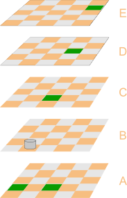 |
| 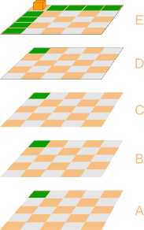 | Türme bewegen sich im Raumschach wie beim traditionellen Schach und zusätzlich gerade nach oben/unten. Links und rechts dargestellt mögliche Züge zweier Türme. Die Bewegungs- und Schlagzüge sind bei Türmen identisch. | 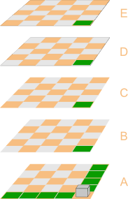 |
| 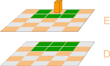 | Könige können sich auf jedes der angrenzenden Felder (auch diagonal/raumdiagonal) bewegen, was 26 mögliche Felder ergibt. Der König ist damit im Vergleich zum traditionellen Schach sehr viel mächtiger. Da er gleichzeitig auch mehr Möglichkeiten hat, einem Schach zu entgehen, stellt er eine nicht zu unterschätzende Figur dar. Links und rechts dargestellt mögliche Züge der beiden Könige. Die Bewegungs- und Schlagzüge sind bei Königen identisch. | 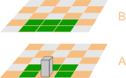 |
| 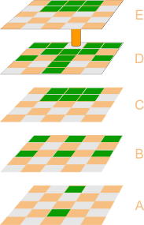 | Damen sind beim Raumscahch zweifelsohne die mächtigsten Figuren. In dere Mitte des Spielfeldes platziert können sie sich auf maximal 52 andere Felder bewegen. Dies entspricht 42% des Spielfeldes. Damen bewegen sich je Zug wie Läufer, Einhörner, Türme oder Könige. Links und rechts dargestellt mögliche Züge der beiden Damen. Die Bewegungs- und Schlagzüge sind bei Damen identisch. | 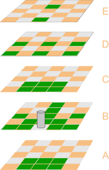 |
Beim Raumschach gelten bezüglich des Schachs die selben Regeln wie beim traditionellen Schach: Wird der König bedroht, so gilt dies als Schach. Der Spieler des bedrohten Königs muss in seinem nächsten Zug seine Figuren so bewegen, dass das Schach nicht länger gilt, der König nicht mehr bedroht wird. Gelingt ihm das nicht, so hat er verloren (Matt).
Wie beim traditionellen Schach hat ein Spieler verloren, wenn für mehr als eine Runde hintereinander im Schach steht.